Building more resilient and reliable power systems
TU Delft EEMCS feature on the CETP/NWO MITIGATE-HARM project coordinated by Aleksandra Lekić. Read more ↗
TU Delft · IEPG · ESE
Interoperable multi-vendor HVDC grids, converter control & protection, and open tools for hybrid AC/DC systems.
Research focus
Led by Assoc. Prof. Aleksandra Lekić. Circuit theory, nonlinear control, harmonic stability, and real-time validation for multi-terminal HVDC systems — with a growing open-source portfolio on GitHub.
Projects
Each project has its own page with consortium links and team members.
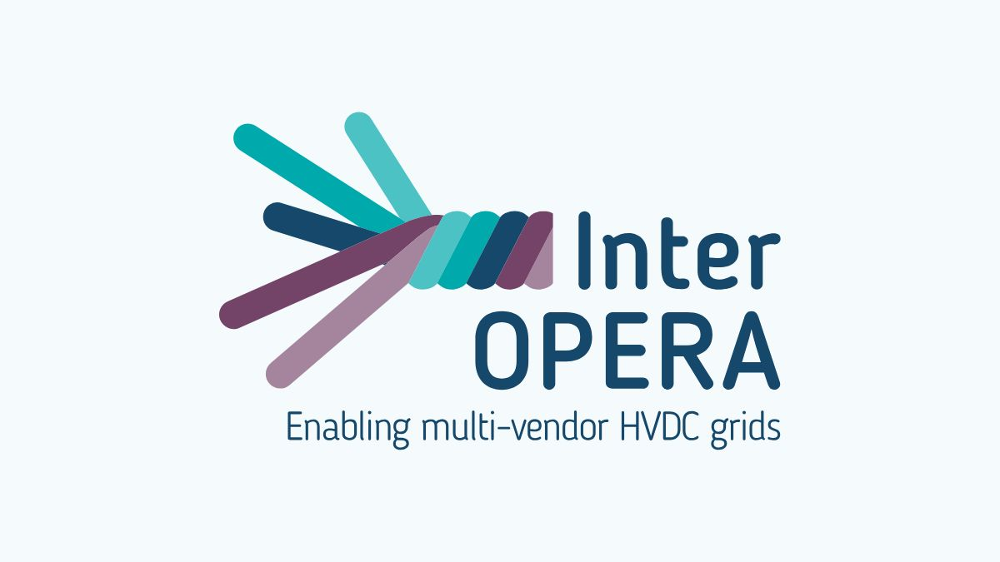
Unlocking multi-vendor, multi-terminal, multi-purpose HVDC grids with grid-forming capability for large-scale offshore wind integration.…
Project page →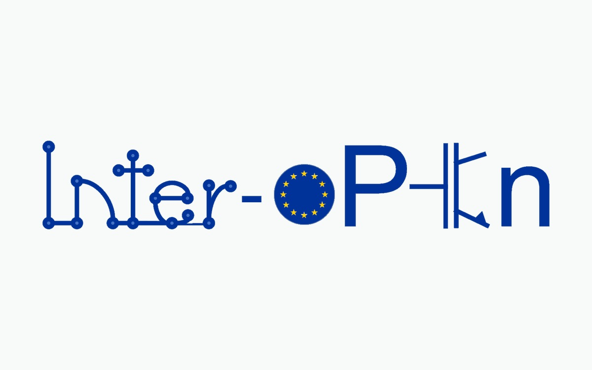
MSCA doctoral network integrating electrical engineering and legal research on PE-asset interoperability through openness.…
Project page →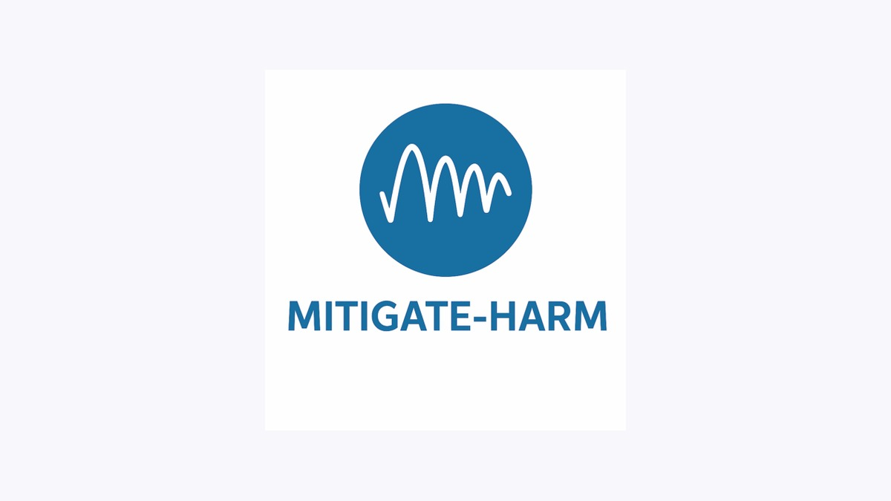
Fast, open-source tools to identify, assess and mitigate converter-driven instabilities and harmonic resonances in hybrid AC/DC and multi-ve…
Project page →
Open-source mathematical framework for harmonic stability assessment of PE-penetrated hybrid AC/DC systems — OPF, dynamic phasors and impeda…
Project page →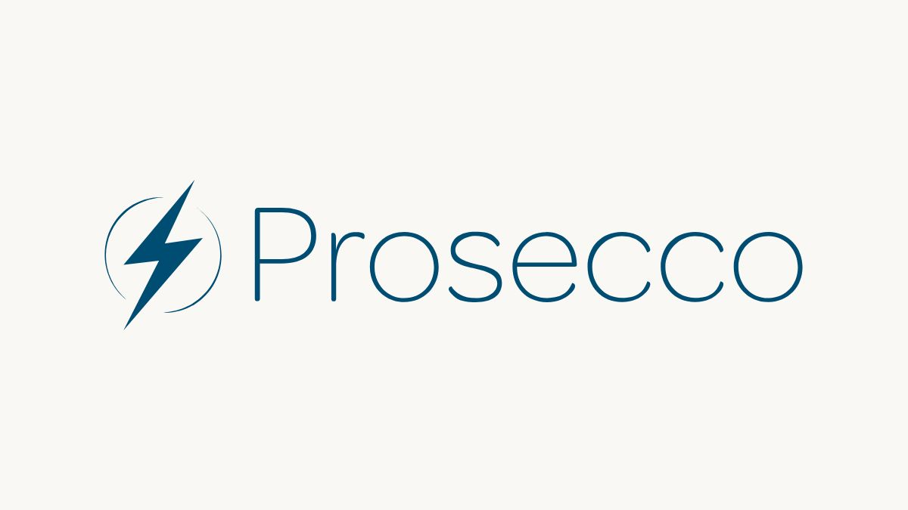
Maturing hybrid AC/DC grids through DC protection near converters and congestion management — with four European demonstrators.…
Project page →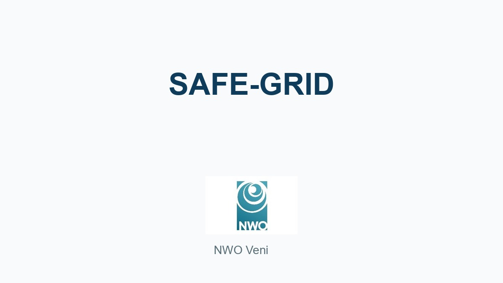
Standardised microsecond-scale adaptive MPC for PE converters in forthcoming multi-terminal HVDC grids.…
Project page →Team
Current researchers — see the team page for alumni and graduated MSc students.
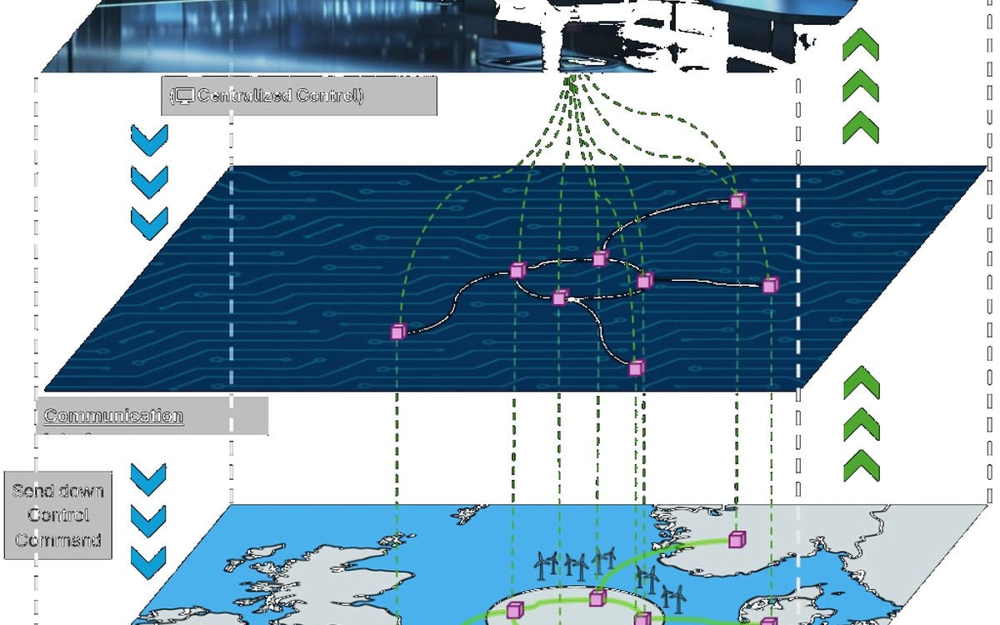
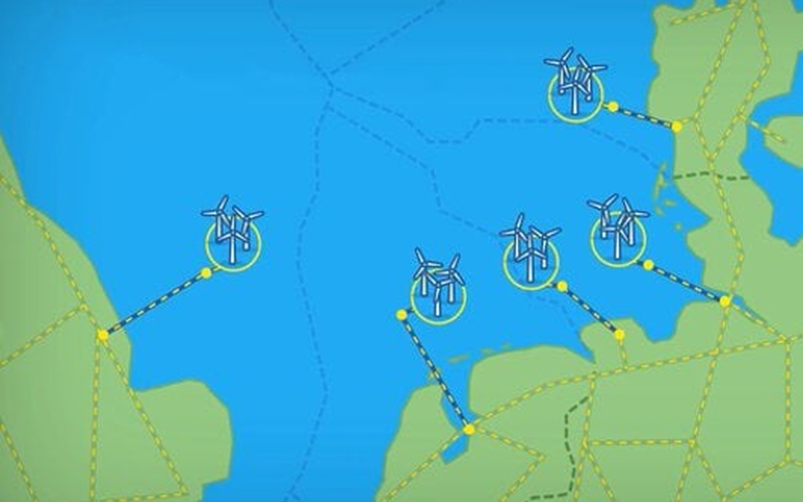
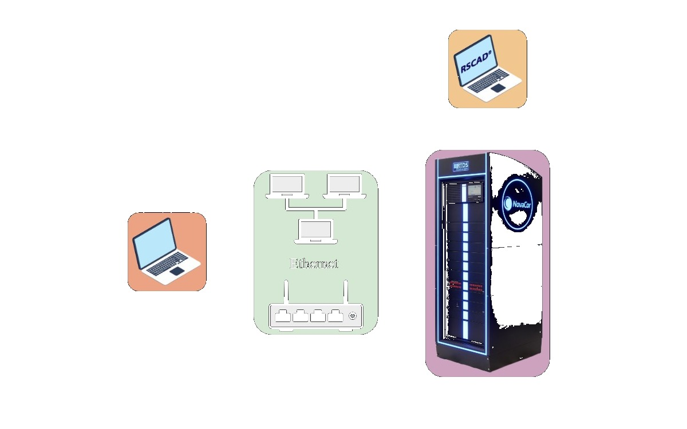
Associate Professor · Group lead · All programmes
Profile →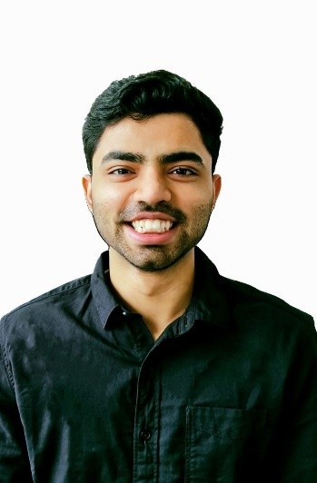
PhD researcher · InterOPERA
Profile →Postdoctoral researcher · InterOPERA
Profile →PhD researcher · HARMONY
Profile →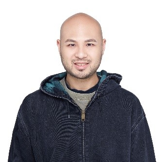
Postdoctoral researcher · HARMONY
Profile →Postdoctoral researcher · SAFE-GRID
Profile →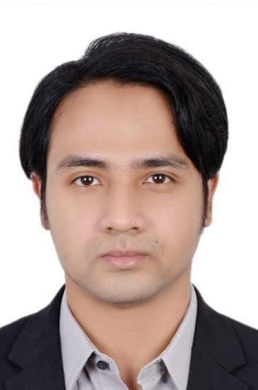
PhD researcher · Inter-oPEn
Profile →Postdoctoral researcher · PROSECCO
Profile →News
TU Delft EEMCS feature on the CETP/NWO MITIGATE-HARM project coordinated by Aleksandra Lekić. Read more ↗
Consortium partners launched open-source tools for harmonic and converter-driven instability mitigation. Read more ↗
IEEE IES featured the MOOC “Control and protection of HVDC/AC electrical grids”. Read more ↗
Two-day 4TU Energy workshop on energy supply & demand in residential buildings.
Open source & portfolio
Software libraries on GitHub plus hardware products (PACS, DCGC, DCSS) from the Interoperability Program.
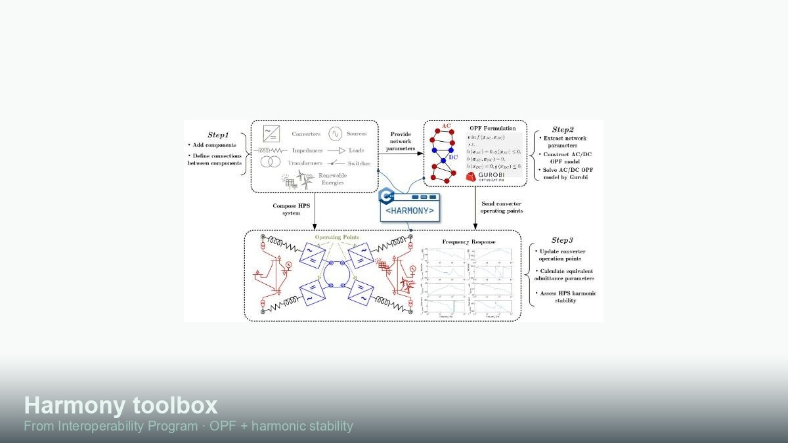
TRL 3–4
Details →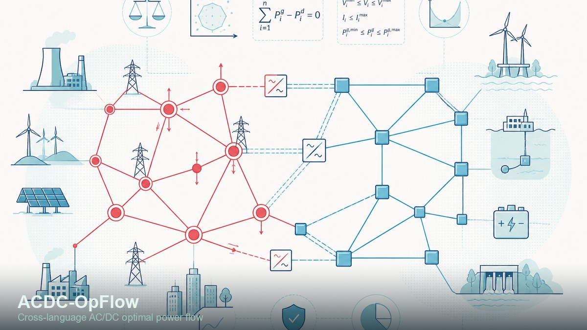
TRL 4–5
Details →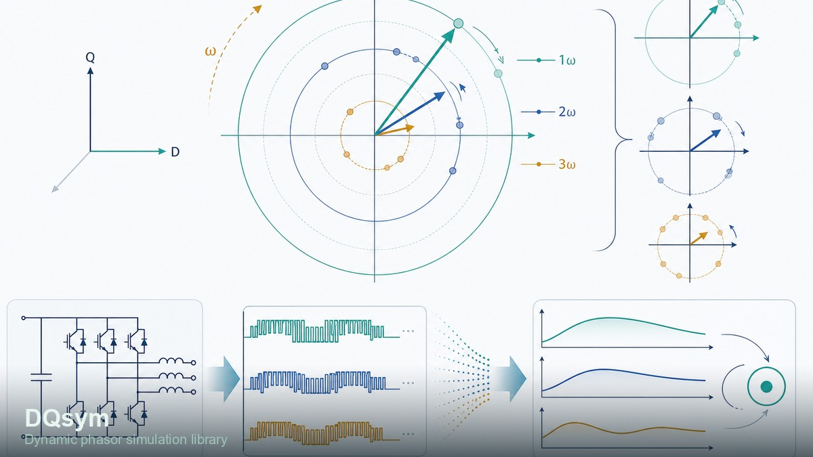
TRL 4–5
Details →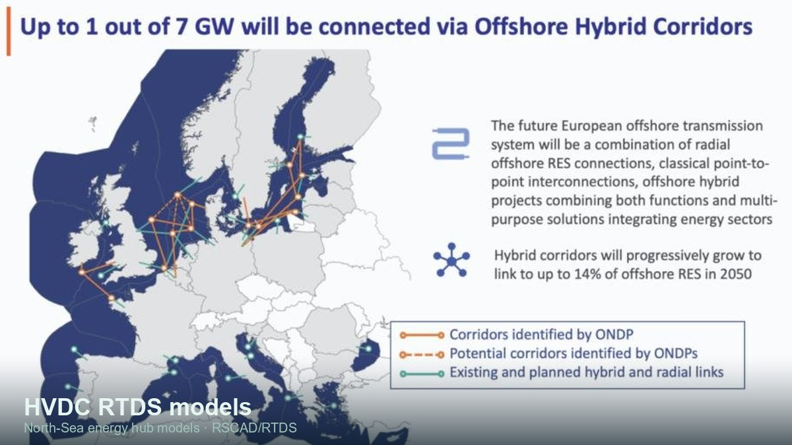
One-of-a-kind library
Details →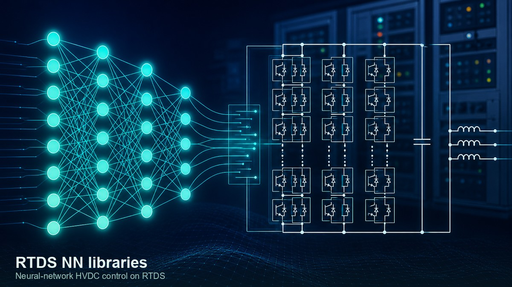
One-of-a-kind library
Details →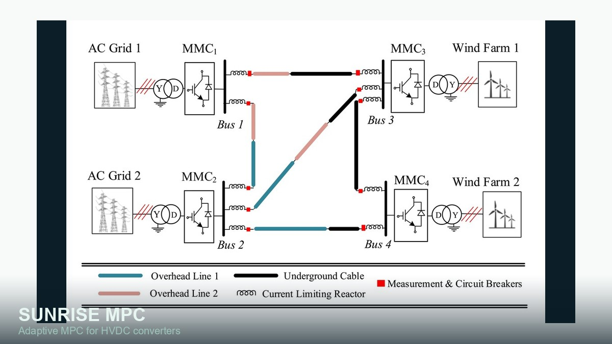
Library
Details →